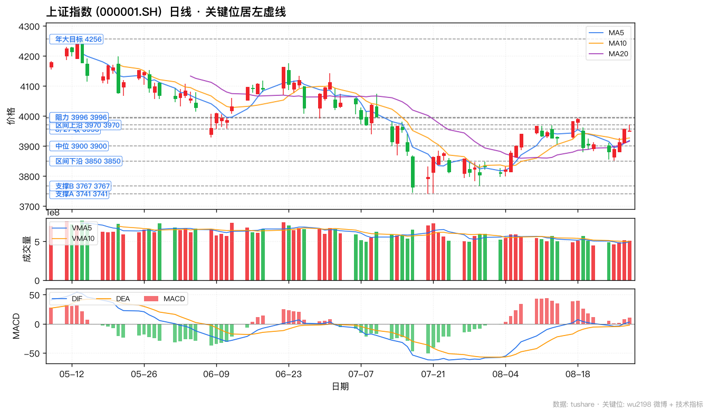
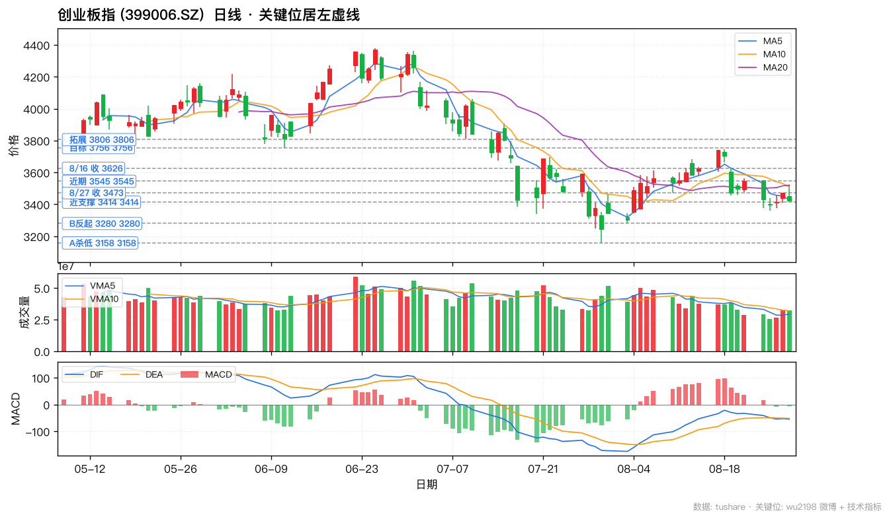
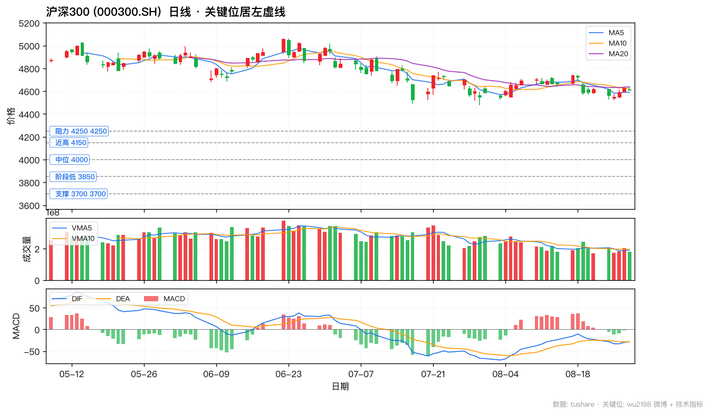
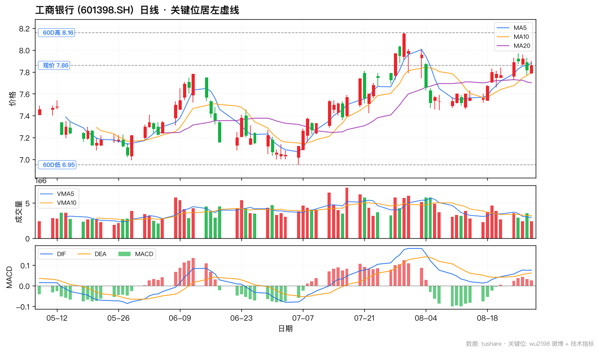
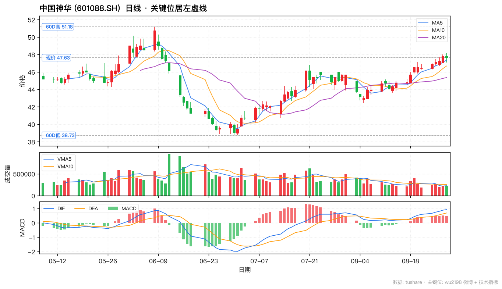
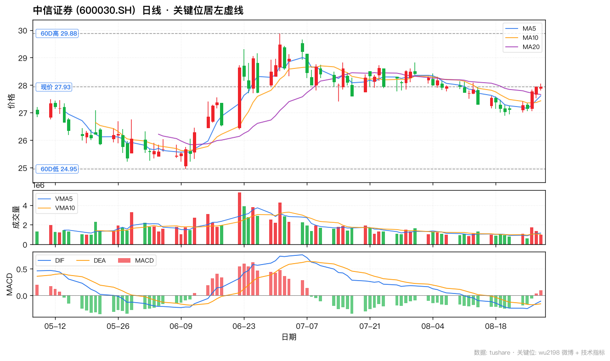
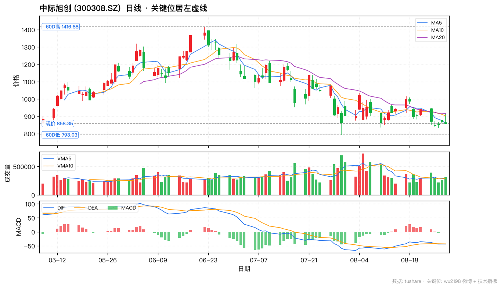
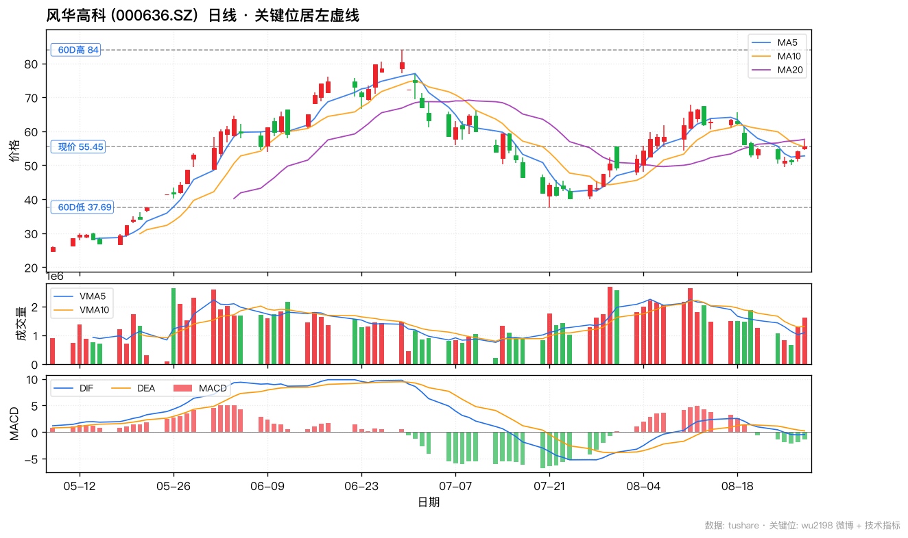
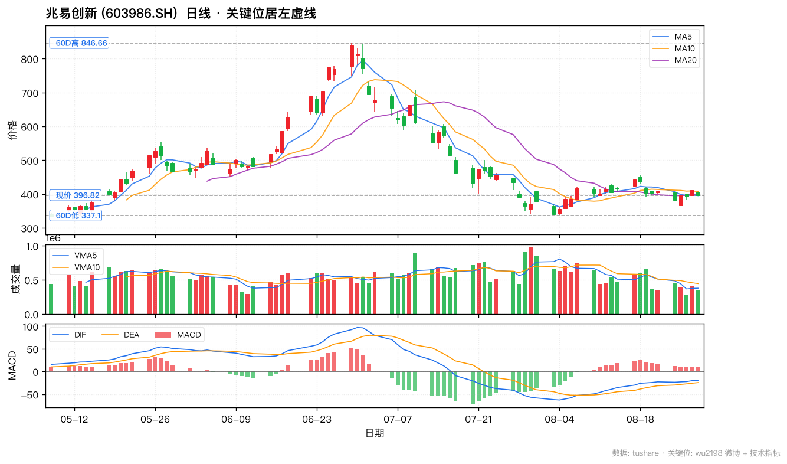

8/28 共抓取 10 条非置顶微博,其中 4 条带操盘信号。博主 8/28 立场:🟡 区间震荡 · 偏防御 · 多看少动(14:55 热帖 9037 赞「下周震荡整理 · 可操作空间不大」+ 14:33 资金流出 289 亿 + 14:44 早盘提醒「短线不要追 · 小心被扎」)。当日 1 条新点名:🆕 14:55 主板权重 「银行/煤炭/保险/券商」 加持收红。
| 时间 | 信号 · 置信 | 互动 | 操盘信号 | 内容 |
|---|---|---|---|---|
| Fri Aug 28 18:36 | ⚪ 无关 · 高 | R:3 C:93 L:1404 | — | #景甜贴黑胶带的原因#有阴影？ |
| Fri Aug 28 14:55 | 🟡 中性 · 高 | R:81 C:940 L:9037 | — | 按周线看大盘指数本周收小阳，指数介于3850--3970之间波动；深成指和创业板指数周线收阴，说明市场对于科技类股的风险预期还在，而主板则得益于银行，煤炭，保险，券商等权种力量的加持收红。整体看下周市场维持震荡整理的可能性比较大，可操作空间不大，依然是多看少动为主.......收到请回复666或点赞 ...全文 |
| Fri Aug 28 14:49 | ⚪ 无关 · 高 | R:4 C:115 L:4599 | — | #景甜给财务八万想了三天#财务这人不错，没出来爆料！ |
| Fri Aug 28 14:46 | 🟡 中性 · 中 | R:15 C:155 L:6249 | — | 反弹的时候你的个股没有份，跌的时候有份，说明你的持股输于大盘。 |
| Fri Aug 28 14:44 | 🔴 空 · 中 | R:8 C:115 L:5703 | — | 早上和大家分析了，短线不要追，小心被扎！ |
| Fri Aug 28 14:41 | ⚪ 无关 · 高 | R:2 C:84 L:3672 | — | #QQ飞车景甜旧照#我当年的QQ号还记得！ |
| Fri Aug 28 14:37 | 🟡 中性 · 中 | R:23 C:112 L:5734 | — | 大盘指数连续反击了几天，显示出疲惫了。而且创业板指数偏软！ |
| Fri Aug 28 14:33 | 🔴 空 · 中 | R:2 C:35 L:4503 | — | 截止14:33两市成交了18782亿元，有3406只个股上涨，大盘资金流出289亿元，量能比上一交易日减少117亿元！ |
| Fri Aug 28 14:25 | ⚪ 无关 · 高 | R:14 C:243 L:5796 | — | 这不是普通的瓜，对于男人来说是很励志的瓜：20年前遥不可及的女神，20年后会躺着怀里帮你修指甲。所以，努力吧！ |
| Fri Aug 28 14:21 | ⚪ 无关 · 高 | R:15 C:312 L:6509 | — | 以个人资产来衡量的话，他这笔钱大概相当于普通人的三千块钱。睡了自己的白月光，然后为了这笔钱撕13.......这事一般人不会这么做。 |
核心标的: 工商银行 (601398) / 中国神华 (601088) / 中信证券 (600030)
博主 8/28 14:55 周线复盘明确点名:「主板则得益于银行,煤炭,保险,券商等权种力量的加持收红」 — 8/28 博主新点名权重板块,显示对主板权重防御属性的高度认可。逻辑:① 8/28 上证 3952.18(+0.05%)在 3850-3970 区间内窄幅震荡,需要权重护盘 ② 8/28 资金面转弱(成交缩量 -2628 亿,资金流出 289 亿),防御板块(高股息/低波动)成为资金避风港 ③ 8/24 14:09 博主「第四大浪调整之后,即使有第五大浪上涨,70%-80% 的股票不会有新高」(11106 赞) → 选股聚焦权重龙头 ④ 工商银行 8/28 收 7.86 (+0.90%) 验证「银行加持收红」⑤ 中国神华高股息 5%+ 煤价稳定,中信证券牛市风向标。8/28 投资策略:区间震荡 + 防御为主,权重龙头是 8/28-下周最优配置。
核心标的: 中际旭创 (300308)
博主 8/22 22:21 主动转发中际旭创 2026 年中报:「2026 年上半年实现营业收入 417.78 亿元,同比增长 182.16%;归属于上市公司股东的净利润 136.51 亿元,同比增长 241.85%;向全体股东每 10 股派发现金红利 12 元(含税)」 — 8/22 业绩兑现 + 8/14 19:30 博主转发英伟达 200G/lane CPO 以太网交换机量产(产业级催化) + 8/4 算力/PCB/CPO/光纤/创新药/交换机/电容/覆铜板 冲板共振 主力自救主线延续。逻辑:① CPO (共封装光学) 是 AI 数据中心网络升级必经之路,英伟达 Spectrum-6 ASIC 102.4Tb/s 量产开启兆瓦级 AI 工厂时代 ② 中际旭创作为 800G/1.6T 光模块全球龙头直接受益 ③ 8/28 中际旭创收 858.35(-0.65%) 处于 60D低 793.03 与 60D高 1416.88 之间回调阶段,8/28 大盘防御格局下 等回调到位(60D低 793 附近支撑确认)再加仓 ④ 博主 8/28 14:44 提醒「短线不要追」 → AI 算力主线 等回调不追高。
核心标的: 风华高科 (000636) / 兆易创新 (603986)
博主 8/27 19:52 主动转发风华高科半年报:「公司上半年实现营业收入 35 亿元,同比增长 26.28%;归属于上市公司股东的净利润 2.9 亿元,同比增长 74.01%」 — 1593 赞。博主 8/17 17:01 提及「长鑫今天收在 61.80 元,涨幅 12.00%」+ 8/17 20:20「闪迪、美光……盘前涨 4% 左右」。逻辑:① 电子元器件行业景气度上行(风华高科半年报公告原文)② MLCC/电阻等被动元件价格周期反转 ③ 存储芯片价格周期反转(DRAM/NAND 2026Q2-Q3 持续上涨) ④ 国产替代主线(长鑫/长存技术突破)⑤ 风华高科 8/28 收 55.45 (+0.82% 业绩兑现延续)⑥ 兆易创新 8/28 收 396.82 (-2.49% 短期回调 · 关注 60D低 337.10 支撑)⑦ 博主 8/28 14:37「创业板偏软」→ 科技/成长板块警惕,等回调到位。



博主看点: 银行 / 煤炭 / 券商 (8/28 博主新点名 主板权重) · 8/28 防御 + 长期主线



博主看点: AI 算力 / CPO (中长期主线 · 业绩兑现延续) · 8/28 防御 + 长期主线

博主看点: 电子元器件 / 半导体 / MLCC (行业景气度上行) · 8/28 防御 + 长期主线


博主 8/28 核心立场综合:
📌 博主风控姿态:8/28 博主给出周线复盘 (14:55 9037 赞) + 资金面 (14:33 4503 赞) + 大盘判断 (14:37 5734 赞) + 早盘防御 (14:44 5703 赞) 4 类信号。这是缠论大师的典型防御操作:大方向坚定(4256),小节奏灵活(8/28 区间 3850-3970 转向「多看少动」),板块敏锐(主板权重 > 创业板/科技)。跟单策略上:大方向跟他(4256 多头),小节奏跟他(8/28 区间 3850-3970 + 「多看少动」),板块跟他(银行/煤炭/券商 权重 + AI 算力/电子元器件 长期主线)。
⚠️ 跟单提示:博主 6/8 披露「已撤离本金+去年盈利一半,预计今年不再调回」 — 自身偏防御,不动用大资金博 4256。8/28 14:55「可操作空间不大,依然是多看少动为主」 — 博主明确 8/28-下周操作思路为多看少动。跟单用户应以他给的关键位 + 板块方向为准,不要机械复制其仓位。第四大浪提示 70-80% 个股不会新高 → 仓位集中到博主点名的权重(银行/煤炭/券商) + 龙头(中际旭创/风华高科/兆易创新 等回调到位再加),不要分散。大盘关键位 3850 失守需警惕进一步下行至 3767/3741。